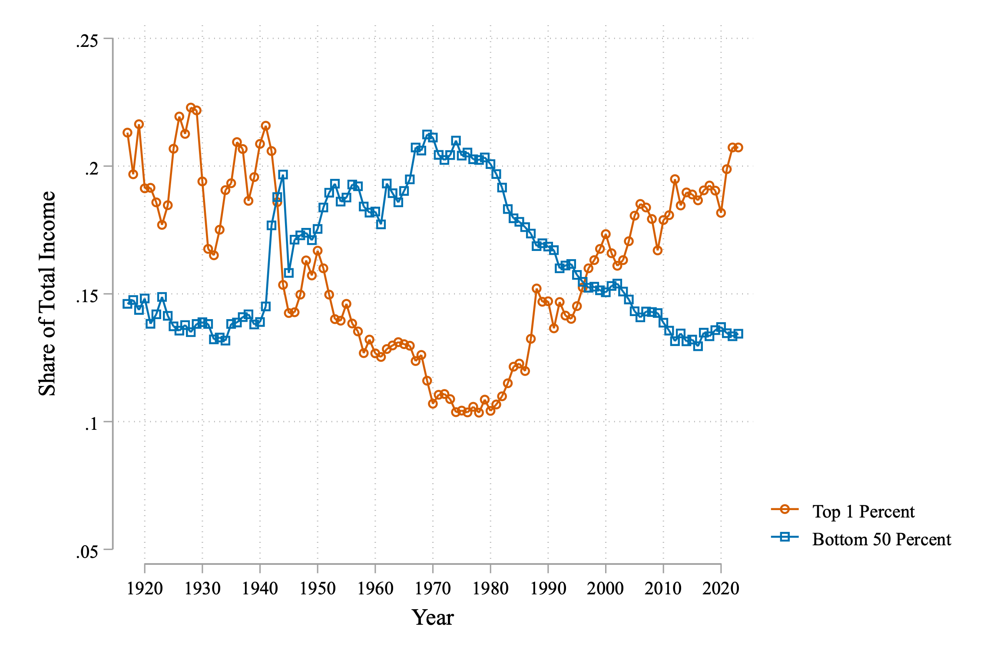
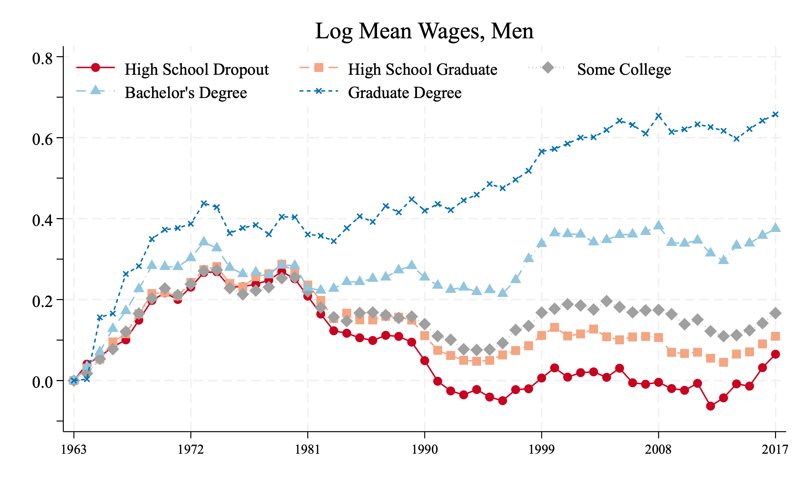
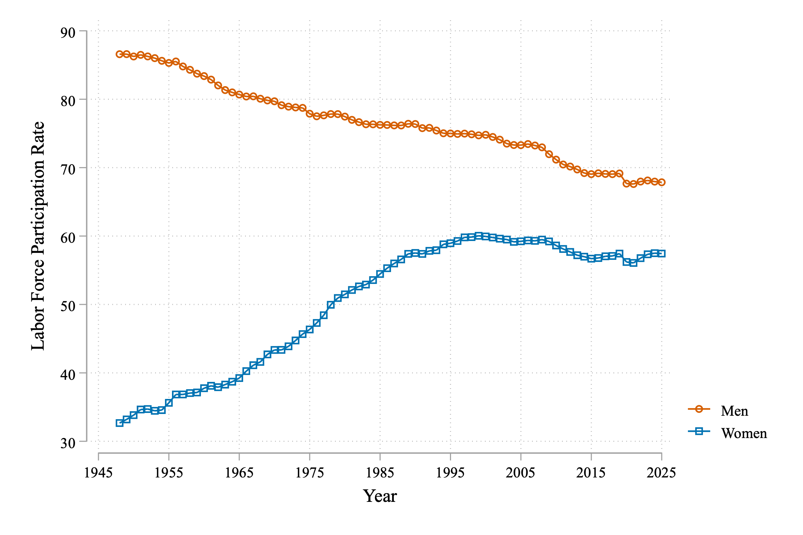

1 Big Questions
1.1 The Rise of Wage Inequality
The early 20th century was marked by the rise of many titans of industry. Figures like John D. Rockefeller, Andrew Carnegie, Henry Ford and J.P. Morgan amassed enormous fortunes. The roaring twentires, a period of massive economic growth, was accompanied by tremendous inequality. For example, in 1929, if you consider the top 1% of all earners, these indviduals took home just over 20% of all income in the U.S. In contrast, the bottom 50% took home just under 15%.
World War II however brought about a dramatic change in the U.S. economy. The post-war boom led to a period of tremendous growth that benefited not only the wealthy, but also dramatically grew the middle class. Throughout the 1950s, for example, the share of income going to the top 1% fell dramatically. By 1970, it was just above 10% of total income, whereas the bottom 50% were earning just above 20% of all income.
However, things started change in the 1980s. The dramatic decrease in inequality brought about by the post-war boom was eroded away. In 2020, inequality reached levels not seen since the 1920s.

Figure 1.1 shows the complete picture over time. This figure was originally produced by economists Thomas Piketty and Emmanuel Saez in their influential paper Income Inequality in the United States, 1913-1998 (Piketty and Saez 2003). The more recent data comes from the World Inequality Database, which continues to track income inequality in the U.S. and around the world. Our first big question will focus on one aspect of this figure: the rise in inequality since the 1980s. Before we dig into this question, however, there are two important points to make. First, there is no single definition of inequality. In the figure above, we measured inequality as differences in the share of income going to the top 1% vs. bottom 50%. But why not top 10% vs. bottom 50%? Instead of share of income, we can also measure inequality across groups of people. For example, a common measure of inequality measures differences across individuals of different educational backgrounds. We will return to these different measures shortly, but before we do, let’s discuss the second important point about inequality. Inequality doesn’t actually tell us anything about how well-off people are in general. Even if inequality is rising, it could be true that everyone is getting richer over time.
To study how well people are doing over time, we need a way to compare income over time. The average median household income in the U.S. in 1950 was about $3,000. In 2023, the median household income was $80,000. Does that mean the median household is richer in 2023? Not necessarily. Prices are dramatically different between these two time periods.
The key to comparing income across time is to compute real income. This is a measure of income that adjusts for inflation. By computing real income we are measuring how much a household can actually purchase. Therefore, if real income is higher today than in 1950, we interpret this as households being able to purchase more today than in the past. To get a sense of how this works in practice, let’s construct a simplified example. Let’s assume that households only pay for two things: housing and groceries.
In 1950, the median monthly rent for housing was $42 per month. In 2023, the median monthly rent for housing was about $1,300. Therefore, housing prices have increased by about 30 times since 1950. Now, let’s consider groceries. To make things even simpler, let’s just look at the case of bread. A single loaf of bread in 1950 cost about $0.30. In 2023, a loaf of bread costs about $2.00. Therefore, the price of bread has increased by about 10 times since 1950. For simplicity, let’s assume the price of bread is a good indicator for how grocery prices have changed over time.
So how much have prices risen between 1950 and 2023? Housing has increased 30% but groceries 10%. How do we decide how much prices have risen overall? To do so, we will compute a price index. To compute a price index, we weight each price increase by what percent of a household’s budget is spent on that good or service. For the sake of this simplified example, let’s assume 50% of a household’s budget goes to housing, and 50% goes to groceries. Therefore, the aggregate price index is given by: \[ \text{Price Index 2023} = \underbrace{0.5 \times 30}_{\text{Housing Increase}} + \underbrace{0.5 \times 10}_{\text{Grocery Increase}} = 20 \]
This means that prices on average have increased by a factor of 20 since 1950. Now, remember our goal here. We want to understand whether $3,000 in 1950 can buy more or less than $80,000 in 2023. Now that we know prices are 20 times higher in 2023, we can take our 2023 income and deflate it by the price index to get real income in 1950 dollars: \[ \text{Real Income 2023} = \frac{\$80,000}{20} = \$4,000 \]
So we finally have our answer. The median household income in 2023, when adjusted for inflation, is about $4,000 in 1950 dollars. This is higher than the median household income in 1950 of $3,000. Therefore, we can conclude that the typical household is better off today than in 1950.
Now we have made a number of simplifications. In particular, we have assumed there are only two goods: housing and groceries. We have assumed the cost of bread is a good approximation for the cost of all groceries. This is clearly not a good assumption in practice. In practice, the Bureau of Labor statistics tracks the prices of thousands of goods and services to compute the Consumer Price Index (CPI). The concept is similar to what we have done here. You create a basket of goods that consumers buy. Then you construct a price change for each specific good, aggregating these price changes in order to get an overall change in prices. When you hear about inflation going up in the news, this is what they are referring to.
Using publicly available data from the U.S. Census Bureau and the Bureau of Labor Statistics (BLS), we can get a more accurate comparison of price levels between 1950 and 2023:
\[ \frac{Prices_{2023}}{Prices_{1950}} = \frac{CPI_{2023}}{CPI_{1950}} \approx 12.6 \]
So if we take the median household income in 2023 of $80,000 and deflate it by this price index, we get: \[ \text{Real Income 2023} = \frac{\$80,000}{12.6} \approx \$6,350 \]
So the real median household income in 2023 is about $6,350 in 1950 dollars. This is more than double the median household income in 1950 of $3,000. So in real terms, households have much more income today than they did in the past. This might be a bit surprising to you. You often hear news about the rising cost of living since the 50s and 60s. But even adjusting for this rising cost of living, households earn more today than they did in the past. As we will see later, however, part of this might be coming from the fact that there are more two-earner households today than in the past.
There is one additional complication we should point out before moving on. To compute changes in prices, we assumed there is some basket of goods that consumers are purchasing. But a lot of what consumers buy today did not exist in the 1950s. Streaming subscriptions, smartphones, laptops, and so on. Even for products that do exists in both time periods, like televisions, the quality is dramatically different. This is a fundamentally difficult conceptual problem with no easy solution. That is one nice feature of how inequality is defined in Figure 1.1, which does not require adjusting for inflation.
Now that we understand how to compare income over time (and the complications that arise), let’s get back to our big question: how has inequality changed over time? We are now going to shift from comparing income shares (as in Figure 1.1) to comparing real incomes across different groups. In particular, we are going to compare how real income has evolved for workers with different education levels.
Figure 1.2 plots changes in real income for men across different groups over time (Autor 2019). Unlike the previous example, we are now plotting income for individuals (rather than households, which may have multiple earners). This figure was produced by economist David Autor in his 2019 paper Work of the Past, Work of the Future. The figure shows some remarkable patters over time. First, between 1963 and 1972, incomes for all groups were rising dramatically. Incomes rose nearly 40% for individuals with a graduate degree (e.g. medical doctors, lawyers, professors). For those with either a high school degree or less, incomes rose about 20%. Because individuals with higher education saw their incomes rise faster, inequality between these groups was rising during this period. But again, no one is worse off, at least in monetary terms. Every group can buy more in 1972 than they could in 1963. This is what real income measures.
Throughout the 1970s wages were mostly stagnant. This was a period of high inflation and low growth, commonly known as stagflation, so its not too surprising we don’t see rapid increases in real incomes. But then in the 1980s, something dramatic happens.

For individuals with graduate degrees, real incomes continue to rise steadily over time. For individuals with a college degree, there is some lag, but by the mid 1990s, we are again seeing increases in real incomes. Other groups are not doing so well. For example, for high-school dropouts, all of that income growth in the 60s is eroded away by around 1990 with little to no growth since then. This is why inequality skyrocketed in the 1980s. While highly-educated individuals (who already earned more on average) were seeing large increases in real income, less-educated individuals were seeing declines in real income. This is our second big question: what drove this rapid increase in inequality that began in the 1980s?
One thing that you may have taken away from this chapter is that comparing income over time is perhaps not as straightforward as you might have thought. The same is true when comparing income across countries. For example, if you want to compare income in the U.S. to income in China, you have a number of hurdles. Just as in comparisons across time, the goods purchased might be very different.
Orley Ashenfelter and Štěpán Jurajda came up with an ingenious way to measure real income differences across countries using the ubiquitous presence of McDonald’s (Ashenfelter and Jurajda 2024). Take a McDonald’s worker in the U.S. earning $10.00 an hour. Let’s assume the average price of a Big Mac in the U.S. is about $5.00 (the actual price varies by location). This means that in one hour, the worker can buy about 2 Big Macs. This is a measure of the worker’s purchasing power. Ashenfelter and Jurajda refer to this as the “McWage”.
Now, let’s consider a worker in China. We can also compute the McWage for this worker. In China, because wages are generally lower, a McDonald’s worker earns about half a Big Mac per hour. Why is this useful? Well, we now have a very clean comparison across places. We are considering wages for a highly standardized job. McDonald’s uses the same technology and production process in all of its locations. We are also comparing a very similar good: a Big Mac. This allows us to make a very clean comparison of purchasing power of these workers that is not confounded by differences in the types of goods or the quality of goods in the different locations.
1.3 Dramatic Shifts in Labor Force Participation
In the news you often see reports about fluctuating unemployment rates. The unemployment rate is the fraction of people (aged 16 or over) who are actively looking for work within the last month, but are not currently employed. It is undoubtedly an important metric of the health of the labor market which we will return to in future sections. However, something that is often overlooked is whether people are even participating in the labor market at all.
In this section, we will explore the labor force participation rate. This is the fraction of people (aged 16 or over) who are either employed or actively looking for work. It is much less responsive to economic fluctuations. If an economy has a recession, many people will be laid off. If all of these individuals continue to search for work, then the labor force participation rate will not change. Therefore, it is much less informative about the short-run health of the labor market. However, this doesn’t mean it is unimportant. In the long-run, we care a lot about what fraction of people are engaging with the labor market. And it turns out there are some important, and somewhat puzzling, trends in labor force participation.
Figure 1.4 plots the labor force participation rate in the U.S. from 1948 to 2023, separately for men and women. For women, labor force participation started at around 30% and rose to around 60% by the mid 1990s, an incredibly rapid increase. You are likely at least somewhat familiar with this trend, even if the exact numbers are new.

For men, we see a very different trend. The labor force participation rate for men started at just below 90% in 1948 and has gradually declined over time. Today, it is just below 70%. Of course, these two trends could be related. The increase in female labor force participation could cause some men to drop out of the labor force in order to take care of children in the household. We will find that this can’t explain the entire trend. Even from the data so far, we can see that since the mid 1990s, female labor force participation has remained pretty stable, even declining somewhat. But male labor force participation continued to decline, even picking up speed in the 2010s, with a noticeable drop during the COVID-19 pandemic.
This is our third big question: what is driving the dramatic changes in labor force participation in the US over time?
1.4 Potential Explanations
As we will see, there are seldom extremely simple answers to these big questions. Throughout the twentieth century and into the twenty-first century, there have been many important changes in the labor market. Many of the changes may contribute to one, two or all of these big trends we’ve studied so far. To help organize, we are going to organize different explanations into three broad categories:
Technology: This refers to the introduction of new technologies that change how work is done. For example, the rise of computers and automation has dramatically changed the nature of work in many industries. We will study how these changes have affected the labor share of income, wage inequality, and labor force participation.
Competition: We will study two facets of competition. First, one of the most-discussed changes in the post-war economy is the rise of globalization. This fundamentally changes what is produced by a country, which can have important implications for the labor market. Second, we will study how competition between firms for workers impacts wages. Throughout much of the history of labor economics, economists have assumed that the labor market is perfectly competitive. We will discuss in detail what this implies, and why an imperfectly competitive labor market may be a better description of the labor market.
Institutions: Policies and institutions also play a pivotal role in the labor market. Unionization rates, minimum wages, and employment protection legislation all shape who works and how much they earn. It is often hotly debated whether policies like the minimum wage are good or bad for the labor market. We will study a number of important institutions and explore how the impact the labor market and how they have changed over time.
With each topic we study we will return to these big questions.
1.5 Economic Models
To guide our exploration of these big questions, we will introduce a few simple models of the labor market. The labor market, in reality, is quite complex. It is composed of millions of firms and workers, each with their own preferences and constraints. The sum total of all the individual behavior of these firms and workers would be impossible to characterize fully. As an analogy, take Newton’s model of gravity. The sun and earth are each composed of billions of individual particles, each with their own gravitational pull. But Newton’s model of gravity tells us if we want to understand the motion of the earth around the sun, we don’t really need to keep track of all the individual particles. We just need to know the mass of the sun and the earth, and the distance between them. That makes the problem enormously easier. This is, in spirit, the goal of our models of the labor market. Our goal is to understand complex phenomena, like the rise in wage inequality. We want a model that is simple, but allows us to gain insight into the problem, and potentially make predictions.
Generally, models are formalized with math. Some people, even academics, are sometimes inherently skeptical of models. They say they are too simple. They miss important aspects of reality. This is often true. But even if you are against models, and refuse to write one down with math, you often do have a model in your mind. Take the example of the minimum wage. If you think that raising the minimum wage will lead to more unemployment, you have a model in your mind. If you think that raising the minimum wage will lead to higher incomes, with little change in employment, you have a different model in your mind. By making the model explicit, we can better understand the assumptions we are making, and how they lead to different predictions. With a model, you can prove to yourself that your different predictions are at least logically consistent with the assumptions you are making.
In this course we will consider various models of the labor market. The first is a model of a perfectly competitive labor market. This is probably the version you saw in your introductory economics class. For studying technological changes, we will find this is a powerful model. It abstracts from other aspects of the labor market that are perhaps not central to the study of the impact of technology on the labor market. However, it has significant limitations. When turning to institutional factors, like the minimum wage or unionization, it will predict these policies have negative impacts on the labor market. A perfectly competitive labor market is efficient. It’s better not to mess with it.
But the reality is that the labor market is not perfectly competitive. The second model we will introduce is a monopsonistic model of the labor market. In this model, we will assume that firms have some market power over their workers. This implies that wages will not necessarily reflect the value of a worker’s output. This will also have important implications for how we think about policies like the minimum wage.
×